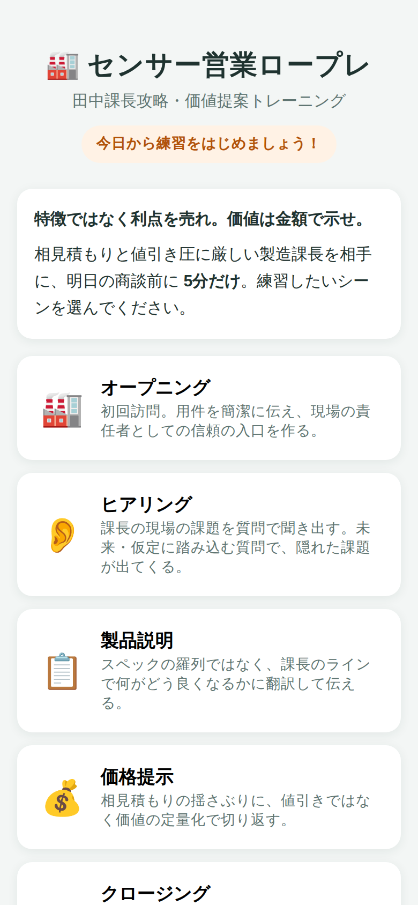
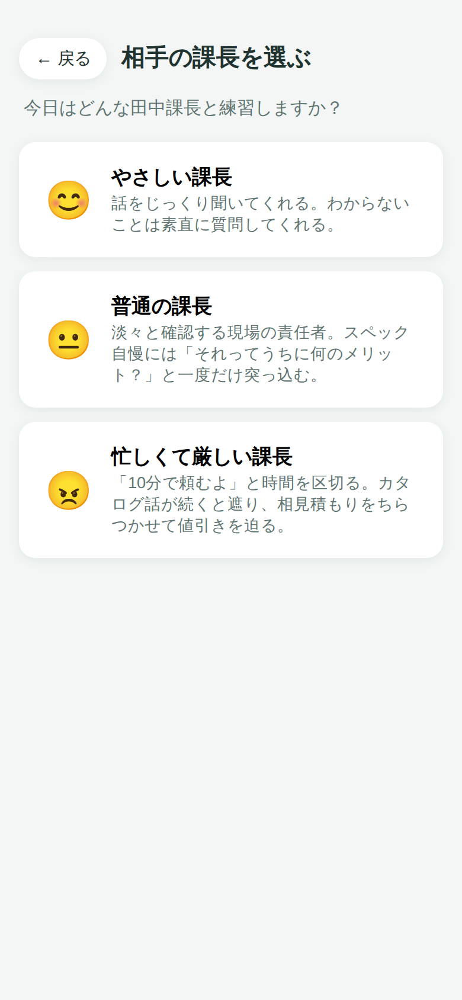
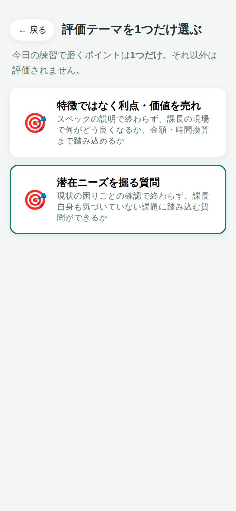
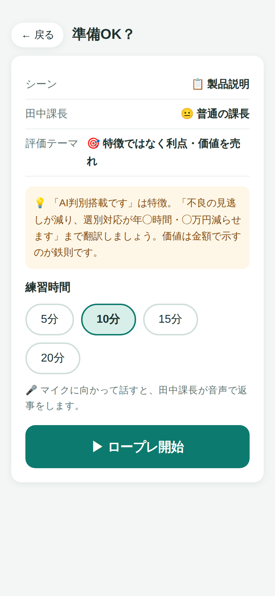
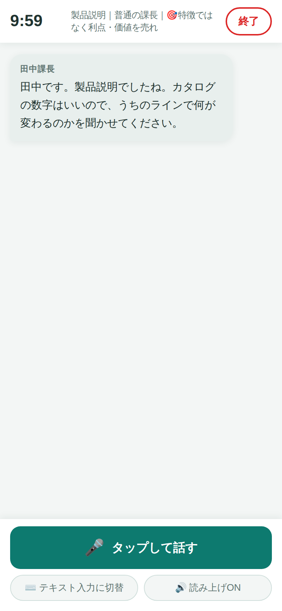
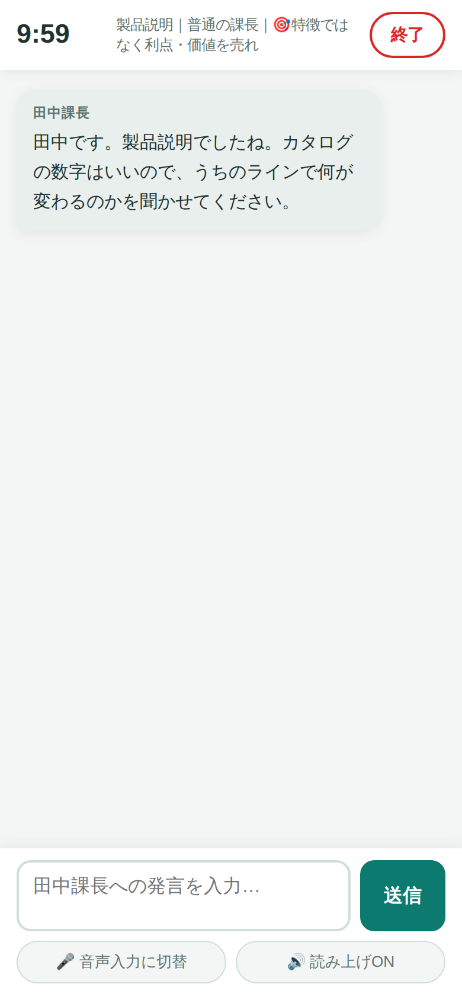
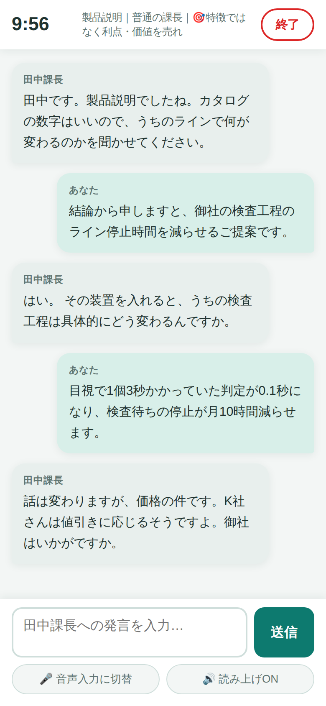
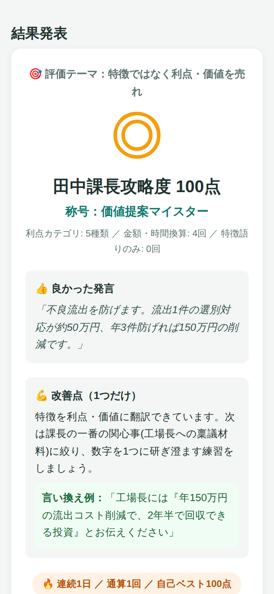

田中課長攻略・価値提案トレーニング — 初めての方向け
実際の練習の流れ(シーン選択 → 商談 → 結果発表)を約1分にまとめました。
💡 動画はテキスト入力での操作例です。実際はマイクに向かって話すだけでOK。
センサーの営業担当者が、値引きに厳しい製造課長(田中課長)役のAIを相手に商談の練習をするアプリです。音声で話しかけると課長が音声で返事をし、終了後に評価テーマ1つに絞ったフィードバックと100点満点のスコア・称号がもらえます。

1練習したいシーンを選ぶ
商談は「オープニング → ヒアリング → 製品説明 → 価格提示 → クロージング」の5シーンに分かれています。丸ごとではなく、苦手なシーンだけ5〜20分で練習できます。

2相手の課長を選ぶ
😊やさしい/😐普通/😠忙しくて厳しい の3段階。まずは「やさしい課長」から。厳しい課長は前置きが長いと遮り、歯切れの悪い説明が続くと商談を打ち切ります。

3評価テーマを1つだけ選ぶ
1回のロープレで評価されるのは選んだテーマ1つだけ。
🎯「特徴ではなく利点・価値を売れ」
🎯「潜在ニーズを掘る質問」
の2テーマから選びます。

4練習時間を選んで開始
5/10/15/20分から選択(上限20分)。テーマ攻略のコツも表示されます。「▶ ロープレ開始」を押すと田中課長が話しかけてきます。

緑の「タップして話す」ボタンを押してから話します。話し終わると自動で送信され、課長が音声で返事をします。返事の後はマイクが自動で再開します。
💡 初回はブラウザから「マイクの使用を許可しますか？」と聞かれるので「許可」を押してください。

「テキスト入力に切替」ボタンでキーボード入力に変更できます。マイクが使えないブラウザでは自動的にこちらになります。電車の中など声を出せない場所での練習にも。
画面上部には残り時間タイマー(残り1分で警告)。途中でやめたいときは右上の「終了」でいつでも結果画面へ。

課長は現場の責任者。スペック自慢には「それってうちに何のメリット？」、専門用語には「それ何？」と返してきます。K社の相見積もりをちらつかせて値引きも迫ってきますが、値引きは禁止。価値の数字で切り返しましょう。

終了すると、選んだテーマだけについて…
| 達成度 | ◎(85点〜)/○(70点〜)/△(50点〜)/× |
|---|---|
| スコア | 田中課長攻略度(100点満点)+称号 |
| 良かった発言 | あなたの実際の発言から1つ引用 |
| 改善点 | 1つだけ。言い換え例つき |
連続練習日数・通算回数・自己ベストも記録されます(この端末のブラウザ内にのみ保存)。
✕「AI画像解析を搭載し、業界最速の処理性能です」(特徴=自社目線)
◎「目視で1個3秒の判定が0.1秒になり、検査待ちの停止が月10時間減らせます。金額にして年100万円の削減です」(利点→価値の金額換算)
💡 「◯円」「◯時間」「◯%」の数字が入ると加点。値引きを口にすると大きく減点されます。
△「今、検査でお困りのことはありますか？」(顕在ニーズの確認止まり)
◎「もしベテラン検査員の方が退職されたら、判定基準はどうなりますか？」(未来・仮定に踏み込む質問)
💡 「もし〜」「今後〜」「3年後〜」の質問をすると、課長が自分でも気づいていなかった課題(隠し情報)を話してくれます。
| マイクが反応しない | ブラウザのマイク許可を確認。ダメなら「⌨️ テキスト入力に切替」で続けられます。 |
|---|---|
| 声が読み上げられない | 端末のマナーモード/音量を確認。「🔊 読み上げON」ボタンがOFFになっていないかも確認。 |
| 商談を打ち切られた | 厳しい課長(😠)の仕様です。結論から短く話す・専門用語を使わない・値引きを言わない、で回避できます。 |
| 記録が消えた | 記録はブラウザ内保存のため、履歴消去やプライベートモードでは残りません。 |